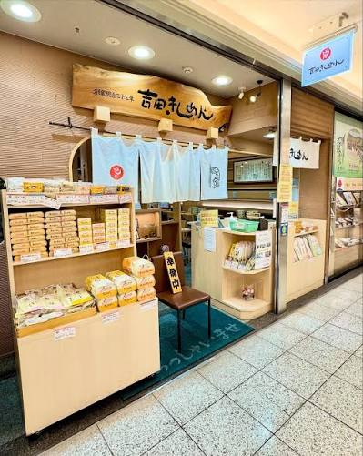
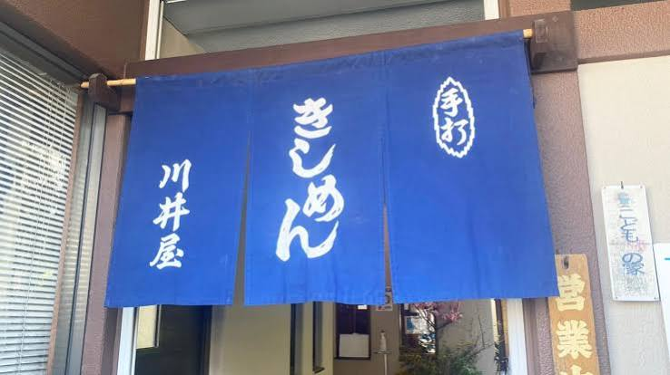
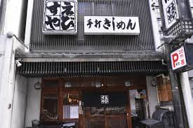
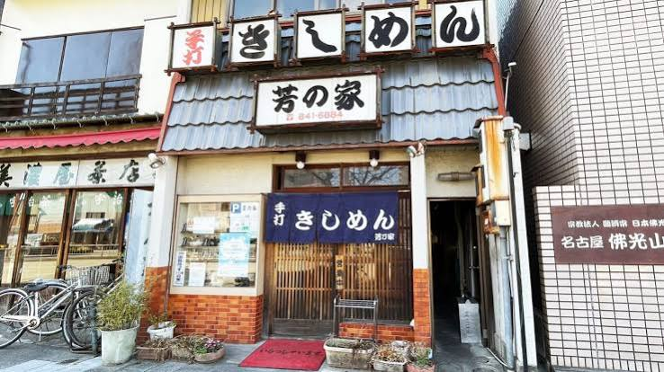

愛知県のご当地グルメ紹介
きしめんとは
きしめんは、愛知県の代表的なご当地グルメで、薄い小麦粉の麺を茹で、特製のスープに浸して食べる料理です。一般的な麺類よりも麺の本数は少ないですが、一本ずつが大きくボリュームがあり、もちもちとした食感が癖になります。
きしめんを食べれるお店
きしめん
よしだ

天候に合わせて
配合を変える
職人技を魅せる
こだわりのきしめん
が食べられます
川井屋

少しあつめの
もっちりした
手作りのきしめん
が魅力的なお店
総本家
えびすや

限界まで濃くした
食塩水でこねた
最強の弾力を
もつ生地による
食感を楽しめる
※しょっぱくない
芳乃家

圧倒されるほどの
幅広い麺とコク
のある濃厚なつゆ
を使用するきしめん
を食べられます